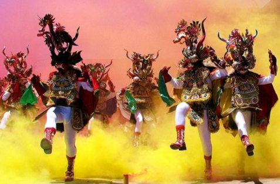
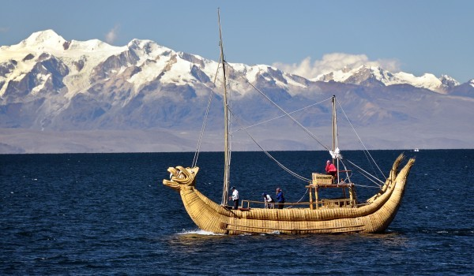
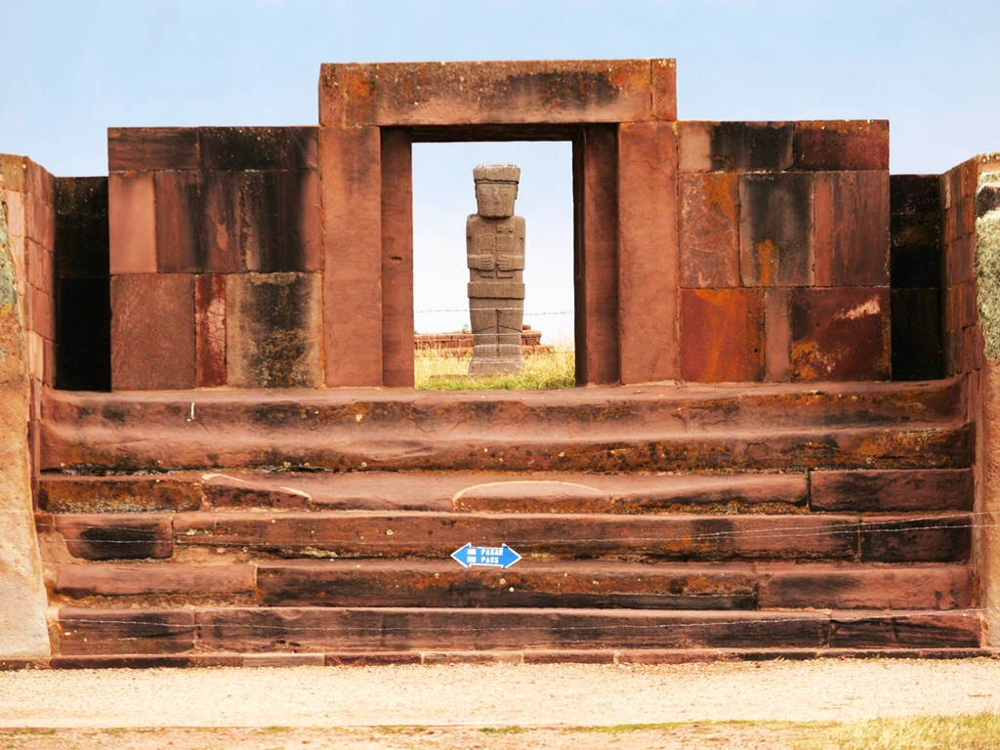
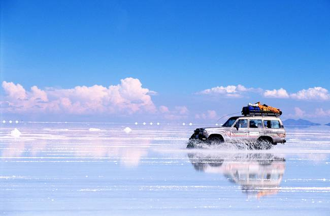

I was born in Bolivia, knowed as the heart of South America.
Bolivia, officially known as the Plurinational State of Bolivia, is the largest landlocked country in America. One-third of the country is the Andean mountain range, and before Spanish colonization, the Andean region of Bolivia was part of the Inca Empire, while the northern and eastern lowlands were inhabited by independent tribes.
The country's population, estimated at 11 million, is multiethnic, including Amerindians, Mestizos, Europeans, Asians and Africans. The racial and social segregation that arose from Spanish colonialism has continued to the modern era. Spanish is the official and predominant language, although 36 indigenous languages also have official status, of which the most commonly spoken are Guarani, Aymara and Quechua languages.
Each year in Oruro, just before Ash Wednesday, the city of Oruro hosts the Carnaval de Oruro, one of the most important folkloric and cultural events in all of South America. The festival features over 28,000 dancers, performing a broad variety of ethnic dances. Around 10,000 musicians accompany the dancers. Unlike carnival in Rio where a new theme is chosen each year, carnival in Oruro always begins with the diablada or devil dance. It is considered to retain most of the artistic expression coming from pre-Columbian America.
Bordering Bolivia and Peru, Lake Titicaca is the largest lake in South America. Incans, as well as a number of other native peoples, are thought to have originated in the region. Near the south-eastern shore of the lake lies Tiwanaku, ruins of an ancient city state that scholars believe was a precursor of the Inca Empire. Lake Titicaca is a popular vacation destination. The original Copacabana is a favorite resort for both tourists and locals.
Located near the south-eastern shore of Lake Titicaca in Bolivia, Tiwanaku is one of the most important precursors to the Inca Empire. The community grew to urban proportions between the 7th and 9th centuries, becoming an important regional power in the southern Andes. At its peak the city had between 15,000–30,000 inhabitants. While only a small part has been excavated, Tiahuanaco represents the greatest megalithic architectural achievement of pre-Inca South America. Today it is one of the top tourist attractions in Bolivia.
For a truly out-of-this-world travel destination, it’s hard to match the Salar de Uyuni. One of the flattest places in the world, the 4,000-square-mile salt flats were formed by a prehistoric lake. Visitors travel in 4×4 vehicles across the expanse of the salt flats to visit locally fashioned structures made entirely from bricks of salt. The salt flats are at their most spectacular after a rain, when water sitting atop the cemented salt acts like a mirror, perfectly reflecting the sky above.
